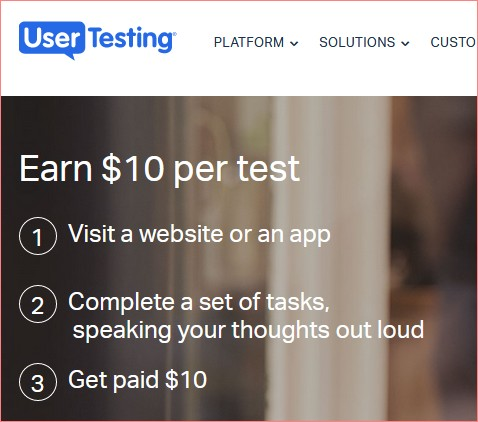
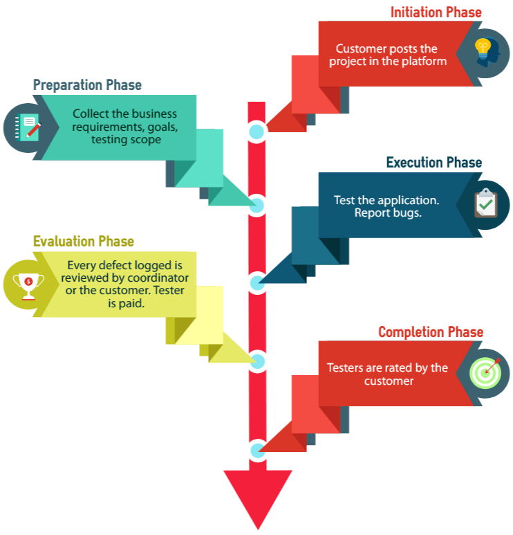

![Genislab]() Genislab Technologies
Genislab TechnologiesIn crowdsourced testing (also called crowdtesting), software testers across the globe can test websites, web applications, mobile applications and software at their convenience, remotely and at their suitable times or as required by the project. They can also report the defects through the crowdtesting platform and can provide their suggestions to improve the usability of the same.
Crowdsourced testing is one of the emerging areas in IT Industry, especially in the software testing field. This is considered as the disruptive stream that is making a big impact all over the world and is one of the most trending practices in software development.
Table Of Contents
- What is Crowdtesting / Crowdsourced testing?
- Why Crowdtesting For Testers?
- How Crowdsourced Testing System Works
- Challenges faced by a tester in crowdtesting
- How to overcome crowdtesting challenges
- How to succeed as a freelancer on crowdtesting platform
- Suitable test types for crowdtesting
- Applications suitable for crowdtesting
- Differences between beta testing and crowdtesting / crowdsourced testing
- Differences between crowdtesting and outsourced testing
- List of websites that support Crowdsourced testing
- Why do testers fail in Crowdtesting at times?
- Can crowdtesting be considered as career option?
- Summary

Crowdtesting is not limited only to software testers. The crowdsourced testing platform is also open to anyone who is interested in testing, irrespective of technical background. While you do not need to have corporate experience or a background in IT, you do need to be a good tester.
All that it needs is the tester to understand the requirements, terms and condition and test the product accordingly.
It is also an alternate way to earn extra income with great flexibility. Let’s see what Crowdsourced testing is all about and how to earn a side income through this platform.
What is Crowdtesting / Crowdsourced testing?
As the name suggests, crowdtesting or crowdsourced testing is a QA technique which enables the crowd to test the software quickly and effectively through an online platform. The term “crowd” here refers to the group of individuals from different countries, professional backgrounds, qualifications, skill sets, devices and environment.
The crowd is the temporary workforce that acts on the software under test until required, online.
Crowdsourced testing imitates the real-world conditions while testing the software as the entire process is user-centric and more realistic conditions are applied during testing.
This ensures the maximum cross-platform coverage for testing as there is a wide diversity in devices, operating systems, browsers and versions available through the enlisted crowd.
The defects, feedbacks and suggestions collected from the crowd after testing the software gives the real insight on quality of the software. This helps in improving the quality of the software, resolving the usability issues and enhancing its speed and performance. It also helps to release the final software to the market with the better standards, safety and security.
Synonyms: Crowdsourced Testing, Crowdtesting and Global Testing.
Crowdsourced testing provides another opportunity to freelance as a tester and is considered as a second job, which is pursued by many testers across the globe. The testers are paid for their testing efforts (for valid defects and non-duplicates) as per the remunerations set by the customer.
In short, this follows the mantra to “Test Globally”.
Why Crowdtesting For Testers?
Crowdtesting is very much required at the organizational level itself. This is because, in-house testing team cannot test everything completely and this has enabled crowdsourced testing to remain in scope as it gives more coverage because of its diversity. But why should testers choose crowdsourced testing? Let’s see this from tester’s perspective.
- Crowdtesting is one way to earn money freelancing as a tester. Many testers work on crowdtesting projects to earn a side income.
- Their earnings increase as they work on more projects and their credibility is established on the crowdsourcing platform.
- There are many testers who are able to earn money through such platforms and eventually earn more online, compared to their full time jobs. This is specially true for countries where the cost of living is cheaper compared to USA.
- Crowdtesting has leveraged the reach of internet across the world, change in economy and employment markets. It is a gig economy where software testers do not have to depend on single job / employer.
- It has become one of the competitive areas that testers aspire to work in. Across the globe when testers are testing the same application, it creates a healthy competition between testers, to prove themselves with their efforts and skills.
- The organizations stringent rules do not affect the crowdsourced testers as they are not bound to the organization.
- The crowd and the organization are on the same platform to co-ordinate the test, for specific period of time, usually few days to a few weeks. The tester can test as per the their availability. This is important for those who want to work from home or those who are unable to pursue a full time job due to personal constraints.
- Testers can share their defects, feedback and reviews without any bias or fear of retribution as the testers do not belong to the organization whose software is being tested.
- The testers are paid for every valid non-duplicate defects they log. More the valid non-duplicate defects, more is the earning. Platforms like UserTesting, UsabilityHub etc may pay for the users / testers feedback which does not specifically have to be about defects.
- The wide-range of applications and software from different domains for testing helps the testers to gain cross-domain work experience.
- Crowdtesting platform encourages community management which helps in building the professional network as well for the testers.
- Since crowdtesting is open to everyone, it presents an opportunity for individuals from non-IT background, developers or recent graduates, who are interested in switching to a career in software testing, to work on testing related projects and gain work experience.
How Crowdsourced Testing System Works
It is very important to understand how crowdsourced testing system actually work. It is a five steps process which is managed on the crowdtesting platform by the coordinator. The coordinator here may be the person from crowdtesting service or the customer. This varies from crowdtesting website to website or from project to project. Let’s look into each step below:
Initiation Phase
Customer posts the project in the platform where the testers across the globe are enabled to apply for the project to test the software.
Customer allows all the testers who applied or selects highly suitable testers to perform testing on their application within the project. Customer may establish the test environment, configurations, test data and secured network access.
Preparation Phase
From the customer, collect the business needs, goals, testing scope, requirements, test cases, special instructions, required skills, environment (devices, browsers, versions, operating systems) and expected deliverables. Fix the pricing:
- Per test case / test step
- Per valid non-duplicate defect
- Bonus
Execution Phase
The testers will now start testing the software on the available predefined environment. Any testing carried out on the environment which is not specified is considered as invalid and rejected.
Report any of the defects found with all the possible details that could be given.
This phase also tracks the test coverage achieved so far with respect to requirements specified and the pre-defined list of environment.
Testers are guided, monitored and supervised regarding their timeline if they are not on track or the work is delayed.
All the updates and announcements on the project are shared immediately in the platform by the customer so that all the testers are on the same page.
Evaluation Phase
Each and every defect logged is reviewed by coordinator or the customer.
Only the valid non-duplicate defects which are reported for any of the predefined environment are considered for payment.
Duplicate and invalid defects are rejected with justification.
The test results are evaluated for accuracy in case of test case execution. Each and every test step is reviewed and evaluated. Once the evaluation is completed, tester’s compensation is processed.
Completion Phase
Present final report to customer with all the possible details and close the project. If the ratings are leveraged in the platform, tester are rated by the customer based on their efforts in raising valid non-duplicate defects and / or test execution.
Customer may also rate testers based on other criteria like communication, timeliness, quality of work, expertise in the subject, professionalism etc.
Challenges faced by a tester in crowdtesting
There are many challenges that the tester faces in Crowdsourced testing. Some of them are given below:
- Due to the varied time zones, tester may miss the opportunity to apply for the project immediately or soon after the project is posted.
- If the limit is set on the number of testers to test the software in the platform, usually first come first recruit approach is adapted and / or sometimes the experience with the type of software/domain is considered for recruiting. In both the cases, if the expert tester applies later or just after all the slots are filled, he / she loses the opportunity to test the software.
- Some testers do not understand the importance of completing their profile on the platform with all the correct details. This can lead to either losing suitable projects or gaining projects which the tester cannot handle.
- Since many testers across the globe test the software, it is very likely that the defect logged may become duplicate if any other tester has already logged it. Tester needs to check the defects for duplicity, if not it may results in non-beneficial testing efforts, if the defect is already logged by other testers.
- One cannot predict the type of software that needs to be tested. If the tester has little or no knowledge of the software domain, it takes more time and effort for the tester and they end up finding less defects or no defects. By the time the tester understands and gets to know what to test and how to test the software, the project deadline would have passed or would be near.
- Sometimes a valid functional defect may be considered as suggestion by the customer and the tester would lose the earning for the defect. The platform usually do not allow the testers to defend their defects.
- Customers usually do not share prior defects that were logged either by them or in the platform in the current cycle. However, the defect logged will be considered as duplicate and tester cannot do anything about it. In few cases, customers do share the prior defects as Known Issues list in the platform so that testers are aware of the issues that are already logged.
- The scope of testing sometimes would not be very clear and leads to invalid defects and rejections.
- Customers are very strict about the environment to be used, like device, operating system, browser and version. In this case, tester has to make sure their settings match with the specified environment. Example: If the browser version is latest and the tester’s device does not have the specified browser version, then it is mandatory to update the browser to the specified version and then start with testing. Keeping the devices list updated on-time helps in gaining more projects
- Communication between tester and coordinator may not be instant. Due to varied time zones, it is likely to have delayed response from the parties. Delay from coordinator hampers the tester’s progress in testing and the delay from tester hampers the coordinator’s progress in evaluating the test results. It is difficult for both the parties to be in sync all the time.
How to overcome crowdtesting challenges
By now we have seen some of the challenges that the testers face in crowdtesting platforms. We shall now see how to overcome these challenges.
- Keep your profile details updated and do not fake your identity
- Act quickly and apply soon, when there is new project posted
- Apply only to the projects in which you have expertise, if you want to earn more. It is ok to apply for other projects where you have no knowledge or less knowledge, but take it as a learning experience than competing to earn more.
- Understand the scope clearly. Have a conversation with the coordinator in case of any queries. Do not assume while testing, this avoids logging invalid defects.
- Provide all the possible information in the defect so that the rejection rate reduces.
- Always perform testing on the specified environment. Do not apply for the project if the device configurations does not match the specified environment, unless you can update your device to match the specifications.
How to succeed as a freelancer on crowdtesting platform
To become a successful freelancer in crowdsourced testing platform, follow the below steps:
Register and complete the profile
- First, register on the crowdsourced testing website (list of platforms is shared later in this article)
- Activate your account
- Complete your profile with correct information. Do not fake any information in the profile.
- Upload the image for the profile photo. Follow the guidelines while uploading. Image should be relevant and usually a professional image is preferred.
- Make the profile public so that it is visible to everyone in the platform.
Add / update device details
- Enter the details of all the devices that you possess
- Do not add the details of the devices just for the sake of adding or devices which you cannot procure for testing. When the project demands a device, then you may not be having it for testing.
- Add the new device details when it is purchased. Do not assume that it will be purchased later and add it in the platform before purchasing.
- Update the already added device details when the system update changes the operating system version or new browser is added or the existing browser version is updated.
- Delete the device if the device is unusable.
Add / update technical skills
- Add the testing skills you possess and the level of experience in each
- Update the level of experience for the skills when you gain more working knowledge and experience
Add / update the billing details
- Add the billing details to which the payment has to be transferred (either bank details or PayPal details)
- Update the billing details in case of any changes
Understand the platform
- Explore the platform
- Read the terms and conditions and understand them
- Explore the community, understand how the community works and thinks
- In case any help is needed, reach out to the platform support
Apply for projects
- First, apply for the projects that you are confident in and have expertise in the type of software
- Do not apply for more or all the projects if you are not confident in taking up all of them
Test the project upon approval
- Upon approval, start testing the software as per the scope defined and on the specified environment
- Keep an eye on the updates and announcements that come up in the project
- In case of any queries reach out the coordinator for help
- If the defect is found, before logging it in the platform check for the already logged defects for duplicity
- Log more of functional defects than UI defects
- Be fair in giving feedback and suggestions on the software
- Provide all possible information in the defect with screenshot and screen recording
Suitable test types for crowdtesting
Not all the types of testing can be carried out in crowdtesting platform. Below is the list of types of testing that can be supported through crowdsourced testing platforms:
- Regression / Functional Testing
- Usability Testing
- Compatibility Testing (Cross Browser Testing / Cross Platform Testing)
- User Acceptance Testing (Alpha Testing and Beta Testing)
- Exploratory Testing
- Security Testing
- Performance Testing
- Localization Testing
Applications suitable for crowdtesting
The applications that are more user-centric are suitable for Crowdsourced testing, as they need more real insight on the usability of the application from user’s perspective. Also, the applications that face public, customer, supplier and enterprise do support crowdsourced testing technique.
Mobile applications, web applications, cloud based applications, stand-alone applications, enterprise applications are significantly using crowdsourced testing for quick results and real insights.
While the list of application types listed above is limited, organizations these days are willing to explore new models and even hardware and AI startups are looking into crowdtesting.
Differences between beta testing and crowdtesting / crowdsourced testing
Crowdtesting is one of the ways to perform Beta testing. This is because, by definition, beta testing is performed by the real users who actually use the application and provide their feedback and suggestions to improve the application. Crowdsourced testing also does the same. The difference is the platform on which the testing is initiated and carried out.
Beta testing of the application is on the applications specific platform. The customer/organization has to send invites to real users to test the application. Invites can be communicated through one or the other means – by announcing in the application, sending mail to the registered or subscribed users, social media platform, etc.
Crowdsourced testing allows any application to enter the platform for testing in the form of project and the project gets posted in the platform. The notification is triggered to all the registered users in the platform.
In Beta testing, defects are sent to the customer in generic way. Crowdsourced testing does support defect management system within the platform where the testers log the defects in the platform and it follows the generic defect life cycle.
Both Beta testing and crowdsourced testing have the common goal which is to ensure that the application is useful to the user and is functioning properly.
Differences between crowdtesting and outsourced testing
When an organization obtains testing related services from another organization which is external to the company, it is known as outsourced testing.
Crowdsourced testing and outsourced testing are completely different in nature.
Crowdtesting does not carry the trustworthiness that is associated with outsourced testing. Outsourced testing is very well established and proven in terms of trustworthiness.
This is because the external organization to which the testing services are outsourced, are vetted thoroughly before the project is assigned. Organizations can also establish credibility through past references, their project portfolios etc.
Within the outsourced organizations, the hiring processes, work experience and background checks of the employees ensures that the testers are credible. Crowdtesting platforms do not perform such levels of validation.
| Crowdtesting / Crowdsourced Testing | Outsourced Testing |
| Location limitations are not applicable | Needs specific location to carry out the tasks |
| Supports testers across the globe | Supports testers who are part of the service organization to which the work is outsourced |
| No working time limitations | Office working hours are strictly followed |
| Wide-diversity achieved in terms of Skills, Locations and Languages | Staffing model is strictly followed |
| Supports flexibility | Very rigid model and process |
| Payment is processed for proven work which meets the standards of quality | Payment is based on headcount model – number of testers and number of hours |
| Test results are transparent and accounts for payment | Quality of work and payment cannot be linked. It is the fixed price payment as per contract agreement or billed based on the number of hours logged |
| Little or no overhead costs incurred | Overhead cost incur as the facility, bench and other fixed costs add up in the model |
List of websites that support Crowdsourced testing
There are many crowdsourced testing platforms available for the testers across the globe. Some of the platforms are listed below. The websites listed at the top may have more traffic and may have more projects compared to those at the bottom of the list.
- usertesting.com
- usabilityhub.com
- testbirds.com
- uTest.com
- bugcrowd.com
- bugfinders.com
- passbrains.com
- crowdsourcedtesting.com
- mycrowd.com
- crowdsprint.com
- 99tests.com
Why do testers fail in Crowdtesting at times?
There are many reasons why testers sometimes fail to establish themselves in crowdsourced testing. Reasons vary from tester to tester. Analyzing why the failure occurs is difficult as the testers across the globe have different constraints. The major reasons are given below.
- Profile data of the tester do not match the required skills for the project. The tester may possess the skills but would not have updated in the platform. This results in not fetching the tester’s profile from the database to the customer, if the invite has to be sent to the testers with specific skills.
- In case of mobile apps or device based testing, if the tester only has older devices which are currently not supported in the market or not in demand, they may not get projects unless the device is very much required by the customer for compatibility testing.
- Testers cannot purchase every new device just for a project and they have to balance the expense versus earning potential
- Payment may not seem attractive to the tester and the chances of letting go the project is high
- If the tester is slow in test execution, by the time the defect is logged, it may become a duplicate defect
- Testing without understanding the scope and actual requirements of the software
- Testers spread themselves thin by trying to be available on every platform. The tester should focus on the top 2 to 3 platforms where they see projects suitable to their expertise and establish their credibility on those platforms.
Can crowdtesting be considered as career option?
Yes. The crowdsourced testing can be considered as a career option but it is an alternative / second job in the beginning. There are many testers who make a full time income from crowdtesting. However it takes time to establish yourself on any platform and this could take several months or years depending on the time you spend on crowdtesting, your expertise, the popularity of the platform etc.
The earnings depends on the number of projects posted to which you are selected, number of valid non-duplicate defects that the tester logs and payment terms of the project. These can vary from time to time, one cannot depend completely on crowdtesting as the primary career / job, at least in the beginning. Even after you establish yourself, it’s always prudent to have multiple sources of income.
It is always a good idea to have crowdsourced testing as a freelancing option and earn extra income. It’s up to the individuals choice on how to view crowdtesting in terms of a career.
Summary
Many testers across the globe prefer the flexibility provided by crowdtesting and the ability to earn extra income in the comfort of their home. It is an emerging model that has been accepted by organizations and testers as well.
Testers are advised to understand the crowdtesting platform’s expectations and terms before taking up a project.
Though many organizations have accepted and are using crowdsourced testing technique, they are not a replacement for in-house testing. However, for testers who are looking for another source of income, crowdtesting is something which they can explore on the side.
How was your experience with crowdtesting? Share your views in the comments below.
If you found this article useful, please do share it with your friends.
Other popular articles:
- What is the Psychology of testing?
- What is a Defect Life Cycle or a Bug lifecycle in software testing?
- What is Error guessing in software testing?
- From where do defects and failures in software testing arise?
- What are Build and Distribution Tools in Agile software testing?
Zenobia says
Very helpful I am truly sr. in my field, 20 years and counting 🙂 I have been very lost at what my next steps would look like in my career. This at least, provided an insight to flexibility.